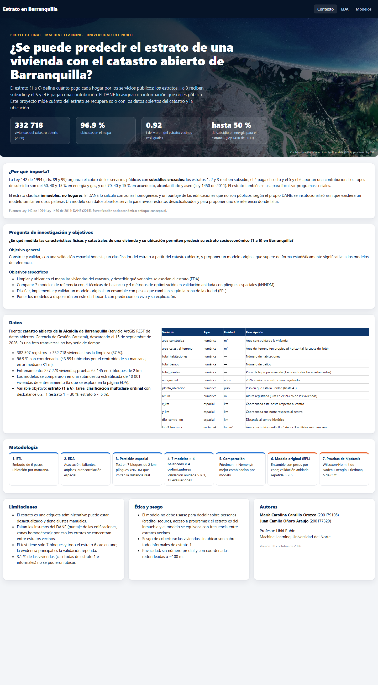
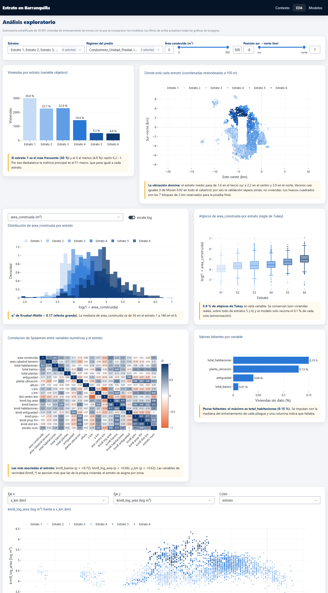
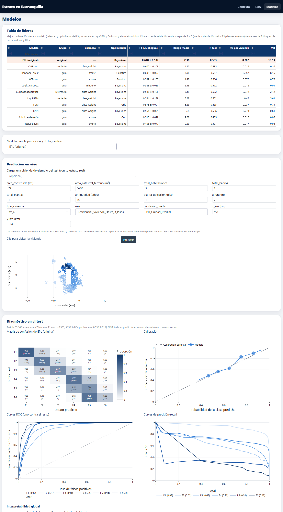

7. Dashboard y despliegue#
Qué responde este capítulo
Cómo está construido el dashboard, qué decisiones de diseño se tomaron, cómo se despliega en Render y dónde está.
7.1 Arquitectura#
Aplicación multipágina de Dash (use_pages=True), con una página por sección y la lógica separada de la
interfaz:
app.py punto de entrada: crea la app, la barra fija y expone server (gunicorn)
pages/contexto.py sección 1: problema, pregunta y objetivos, datos y diccionario, metodología, ética, autores
pages/eda.py sección 2: filtros globales → dcc.Store → 7 gráficos con interpretación
pages/modelos.py sección 3: líderes, predicción en vivo con explicación local, diagnóstico, pruebas, EPL
src/original_model.py clase del modelo original
src/data.py carga y caché (lru_cache) de datos y artefactos
src/plots.py funciones que construyen todas las figuras (una plantilla Plotly)
src/explicacion.py valores de Shapley por permutaciones (explicación local)
artifacts/ modelos serializados (joblib) + metadata.json + referencia de ida y vuelta
data/dashboard/ datos livianos y resultados ya calculados
assets/ CSS (paleta), tema Flatly local, imagen satelital de portada
tests/ pruebas (modelo original, explicación, ida y vuelta)
El dashboard nunca entrena ni busca hiperparámetros: lee data/dashboard/ (generado por
experimentos/08_datos_dashboard.py y 10_datos_modelos_dashboard.py) y carga los modelos de artifacts/
una sola vez por proceso (functools.lru_cache).
7.2 Contenido de cada sección#
Sección |
Qué responde |
Componentes |
|---|---|---|
Contexto |
¿Qué problema es y por qué importa? |
Portada con cifra clave citada, relevancia (Ley 142, Ley 1450, DANE), pregunta y objetivos, fuente y diccionario de 22 variables, diagrama de la metodología, limitaciones, ética, autores, versión y fecha |
EDA |
¿Qué variables se asocian al estrato y dónde? |
Filtros globales (estratos, régimen, área, posición sur–norte) que actualizan todos los gráficos; distribución del objetivo; mapa; histograma y atípicos por variable (con escala log); correlación de Spearman; faltantes; explorador bivariado (x, y y color a elección); una frase de interpretación por gráfico, recalculada con los filtros |
Modelos |
¿Qué modelo es mejor, qué predice para mi vivienda y por qué? |
Tabla de líderes ordenable y filtrable; selector de modelo; predicción en vivo con formulario generado del esquema, validación de rangos y tipos, viviendas de ejemplo del test y clic en el mapa; probabilidad por estrato y explicación local; matriz de confusión, ROC, precisión-recall y calibración en el test; importancia global; diagrama de diferencia crítica y tabla de pruebas (versión 1 y 2); subsección del modelo original con pseudocódigo, diferencias con la literatura, convergencia, ablación, campo de pesos y veredicto |
7.3 Decisiones de diseño#
Paleta de cinco colores (azul oscuro, azul, dorado, naranja solo para el modelo original, gris) y una rampa de un solo tono para los estratos; cada gráfico rotula los estratos, así que no depende solo del color.
Tema Flatly de dash-bootstrap-components como archivo local (no depende de un CDN), barra fija, rejilla
dbc.Row/dbc.Colpara escritorio y tableta.Rendimiento: datos y modelos se cargan una vez; los filtros calculan una sola vez las filas que cumplen y las guardan en un
dcc.Storeque leen los demás callbacks;prevent_initial_callyno_updatedonde aplica.Robustez: el formulario valida tipo y rango de cada entrada (rango de entrenamiento guardado en
metadata.json) y los errores se muestran condbc.Alert; un error del modelo no detiene la aplicación.Explicación local sin la librería shap: valores de Shapley por muestreo de permutaciones [Štrumbelj and Kononenko, 2014] (el mismo estimador de
shap.PermutationExplainer) implementados ensrc/explicacion.py, con eficiencia exacta (las contribuciones suman la diferencia entre la predicción y el valor base). Se evita instalarshapy sus dependencias en un servidor de 512 MB.Privacidad: sin número predial y con las coordenadas redondeadas a ~100 m.
7.4 Despliegue en Render#
Verificar en local:
python app.py(puerto 8050) y queapp.serverexiste.requirements.txtcon versiones exactas (incluyegunicorn) yrender.yamlconPYTHON_VERSION = 3.11.15.Subir el repositorio a GitHub.
En Render: New → Web Service (o Blueprint con
render.yaml), conectar el repositorio, Build Commandpip install -r requirements.txt, Start Commandgunicorn app:server --workers 1 --threads 2 --timeout 120.Revisar los registros de construcción y abrir todas las páginas y callbacks en la URL pública.
En el plan gratuito el servicio se duerme sin visitas (la primera carga tarda cerca de un minuto) y tiene 512 MB de memoria; por eso los artefactos se guardan comprimidos y la página de modelos carga cada modelo solo cuando se elige. Los tamaños y la memoria medida están en la sección 7.5.
7.5 Artefactos#
import json
from pathlib import Path
import pandas as pd
RAIZ = Path.cwd().resolve().parents[1]
ruta = RAIZ / "artifacts" / "metadata.json"
if ruta.exists():
meta = json.loads(ruta.read_text(encoding="utf-8"))
tabla = pd.DataFrame([{"modelo": n, "archivo": m["archivo"], "MB": m["tamano_MB"],
"entrenamiento (s)": m["seg_entrenamiento"],
"inferencia (ms por vivienda)": round(m["ms_inferencia_por_vivienda"], 3),
"ida y vuelta idéntica": m["ida_y_vuelta_identica"]} for n, m in meta["modelos"].items()])
display(tabla)
print("Versiones:", meta["librerias"])
else:
print("Pendiente: experimentos/07_artefactos.py")
| modelo | archivo | MB | entrenamiento (s) | inferencia (ms por vivienda) | ida y vuelta idéntica | |
|---|---|---|---|---|---|---|
| 0 | KNN | knn.joblib | 0.81 | 0.2 | 0.773 | True |
| 1 | Naive Bayes | naive_bayes.joblib | 0.04 | 0.5 | 0.017 | True |
| 2 | Logística L1/L2 | logistica_l1_l2.joblib | 0.01 | 24.4 | 0.016 | True |
| 3 | Árbol de decisión | arbol_de_decision.joblib | 0.06 | 1.3 | 0.016 | True |
| 4 | Random Forest | random_forest.joblib | 8.15 | 16.7 | 0.057 | True |
| 5 | XGBoost | xgboost.joblib | 0.75 | 10.4 | 0.072 | True |
| 6 | SVM | svm.joblib | 0.73 | 11.5 | 0.037 | True |
| 7 | XGBoost geográfico | xgboost_geografico.joblib | 2.42 | 11.3 | 0.072 | True |
| 8 | LightGBM | lightgbm.joblib | 5.61 | 11.5 | 0.420 | True |
| 9 | CatBoost | catboost.joblib | 0.16 | 7.2 | 0.019 | True |
| 10 | EPL (original) | epl__original.joblib | 10.53 | 269.8 | 0.702 | True |
Versiones: {'python': '3.14.6', 'numpy': '2.4.4', 'scipy': '1.17.1', 'pandas': '3.0.2', 'scikit-learn': '1.8.0', 'imbalanced-learn': '0.14.2', 'xgboost': '3.2.0', 'lightgbm': '4.7.0', 'catboost': '1.2.10', 'joblib': '1.5.3'}
7.6 Capturas#


Figura 1 Página Contexto: portada con la imagen satelital, relevancia, pregunta y objetivos, datos, metodología y autores.#


Figura 2 Página EDA: filtros globales arriba y cada gráfico con su frase de interpretación.#


Figura 3 Página Modelos: tabla de líderes, predicción en vivo y diagnóstico del modelo elegido en el test.#
7.7 URL pública#
El dashboard se publica en Render desde el repositorio del proyecto; la dirección exacta queda en la introducción
del libro y en el README.md.